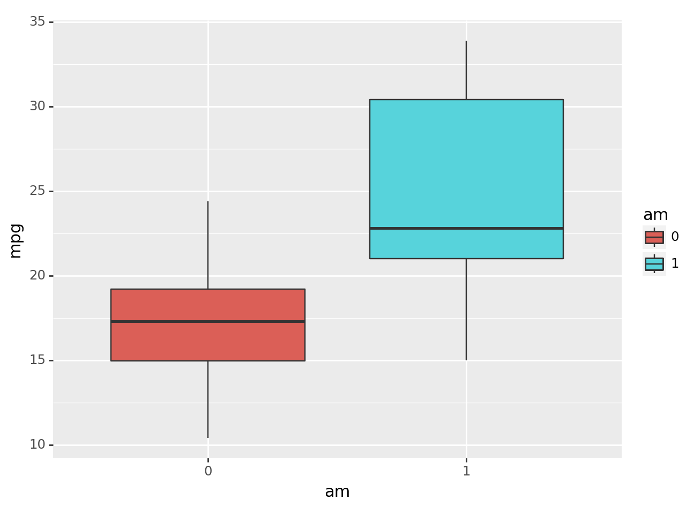
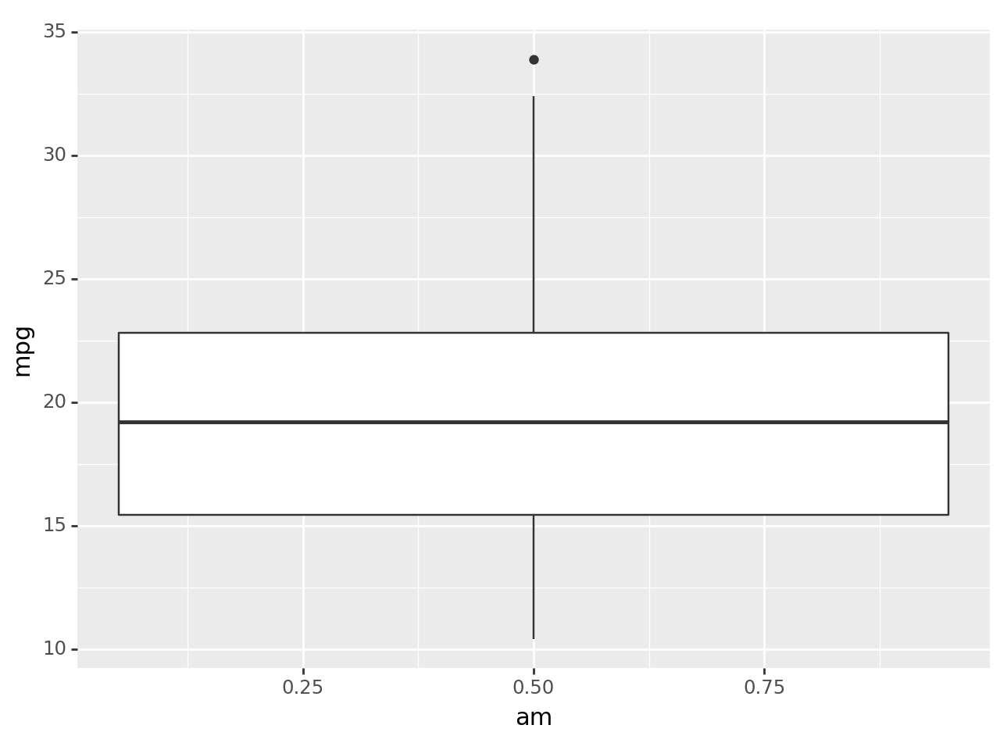
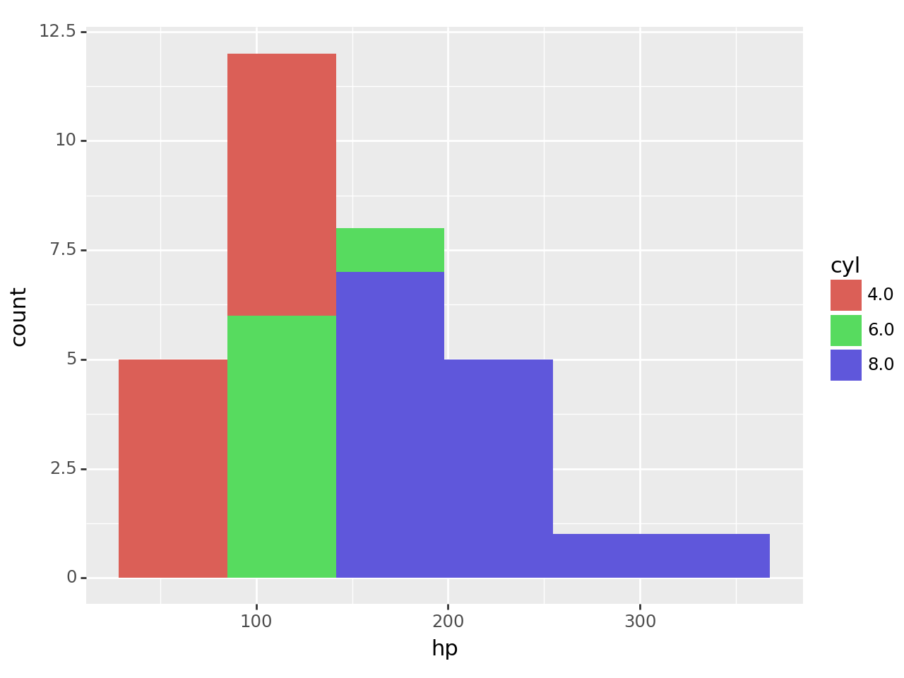
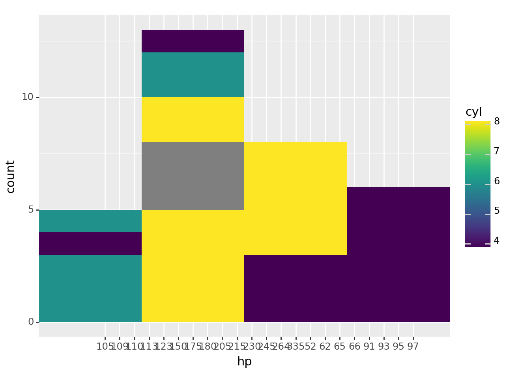
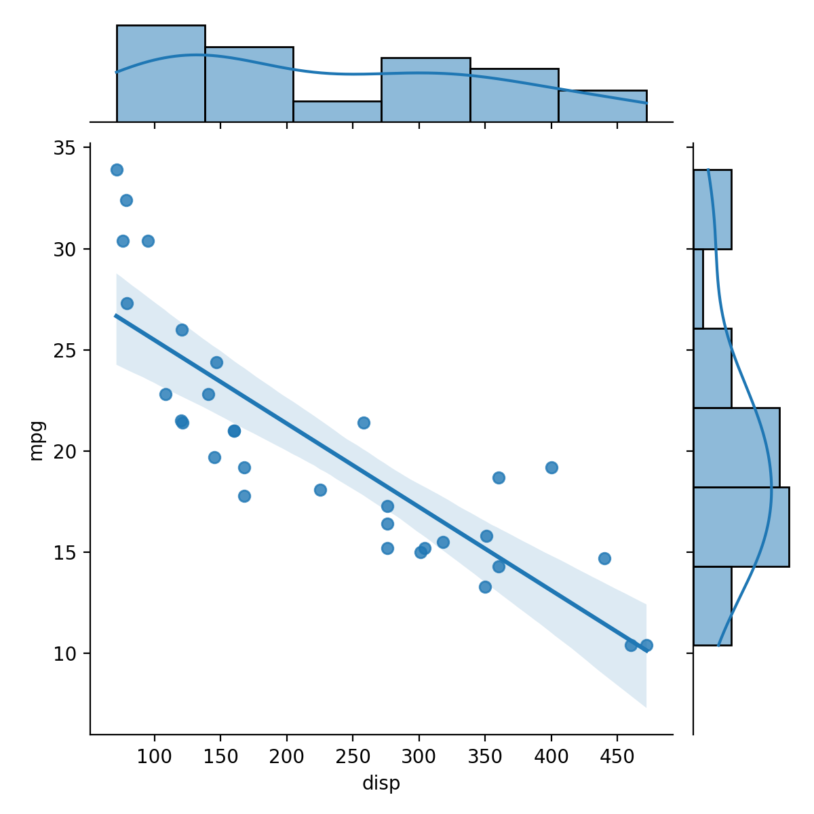
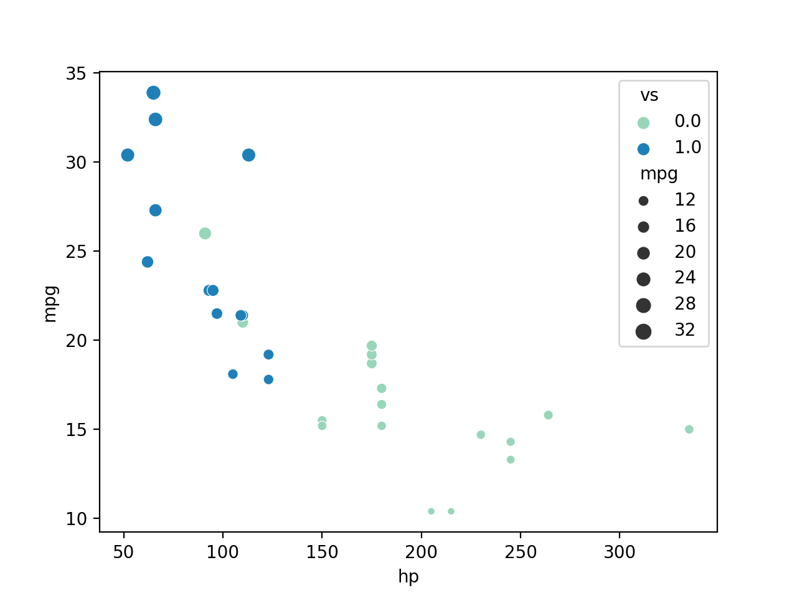
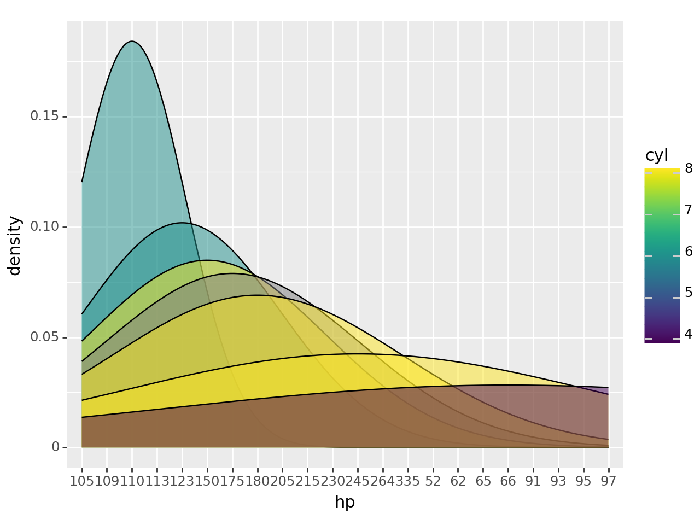

from plotnine import geom_density, ggplot, geom_point, aes, geom_boxplot, geom_histogram, geom_point
import seaborn as snsData Visualization Using plotnine
The Palmer Penguins dataset had a variety of column types with which to explore some nice visualizations. The mtcars dataset is another popular dataset for doing some simple data work, but does not contain the same types of variables.
Run the following code to load the mtcars dataset and explore the observations and variables contained within. To learn more about this dataset check out this site
import statsmodels.api as sm
import pandas as pd
mtcars = sm.datasets.get_rdataset("mtcars", "datasets", cache=True).data
df = pd.DataFrame(mtcars)df.head()| mpg | cyl | disp | hp | drat | wt | qsec | vs | am | gear | carb | |
|---|---|---|---|---|---|---|---|---|---|---|---|
| rownames | |||||||||||
| Mazda RX4 | 21.0 | 6.0 | 160.0 | 110 | 3.90 | 2.620 | 16.46 | 0.0 | 1.0 | 4.0 | 4.0 |
| Mazda RX4 Wag | 21.0 | 6.0 | 160.0 | 110 | 3.90 | 2.875 | 17.02 | 0.0 | 1.0 | 4.0 | 4.0 |
| Datsun 710 | 22.8 | 4.0 | 108.0 | 93 | 3.85 | 2.320 | 18.61 | 1.0 | 1.0 | 4.0 | 1.0 |
| Hornet 4 Drive | 21.4 | 6.0 | 258.0 | 110 | 3.08 | 3.215 | 19.44 | 1.0 | 0.0 | 3.0 | 1.0 |
| Hornet Sportabout | 18.7 | 8.0 | 360.0 | 175 | 3.15 | 3.440 | 17.02 | 0.0 | 0.0 | 3.0 | 2.0 |
The statement “the mtcars dataset does not contain the same types of variables as the penguins dataset” is a little true and a little false. There are no variables that contain text values, BUT there are variables that it makes sense to consider categorical variables. In most situations, it makes sense to treat the values of categorical variables as text values instead of numeric values.
Use the astype() method to convert the categorical variables of the mtcars (df) dataset to have text values in the code chunk below. We’ve done one for you!
df["am"] = df["am"].astype(str)
# Convert the other variables below
df["cyl"] = df["cyl"].astype(str)
df["vs"] = df["vs"].astype(str)
df["gear"] = df["gear"].astype(str)
df["carb"] = df["carb"].astype(str)
df.head()| mpg | cyl | disp | hp | drat | wt | qsec | vs | am | gear | carb | |
|---|---|---|---|---|---|---|---|---|---|---|---|
| rownames | |||||||||||
| Mazda RX4 | 21.0 | 6.0 | 160.0 | 110 | 3.90 | 2.620 | 16.46 | 0.0 | 1.0 | 4.0 | 4.0 |
| Mazda RX4 Wag | 21.0 | 6.0 | 160.0 | 110 | 3.90 | 2.875 | 17.02 | 0.0 | 1.0 | 4.0 | 4.0 |
| Datsun 710 | 22.8 | 4.0 | 108.0 | 93 | 3.85 | 2.320 | 18.61 | 1.0 | 1.0 | 4.0 | 1.0 |
| Hornet 4 Drive | 21.4 | 6.0 | 258.0 | 110 | 3.08 | 3.215 | 19.44 | 1.0 | 0.0 | 3.0 | 1.0 |
| Hornet Sportabout | 18.7 | 8.0 | 360.0 | 175 | 3.15 | 3.440 | 17.02 | 0.0 | 0.0 | 3.0 | 2.0 |
If you print out your new dataset, is it clear that the variables have been converted to text values? If so, how can you tell?
It should also be clear by how plotnine treats these variables.
Create side-by-side boxplots of the
mpgvariable by the different values of theamvariable. What happens if you convert theamvariable back to float values and then try to create this same plot? Explain the differences between the two plots.Create overlaid histograms of the
hpvariable for the different values of thecylvariable. What happens if you convert thecylvariable back to float values and then try to create this same plot? Explain the differences between the two plots.
# Create plot for (1) here
boxplot_str= (ggplot(mtcars,
aes(
x = "am",
y = "mpg",
fill = "am"
))
+ geom_boxplot())
boxplot_str
<Figure Size: (640 x 480)># Convert the other variables below to float
df["am"] = df["am"].astype(float)
df["cyl"] = df["cyl"].astype(float)
df["vs"] = df["vs"].astype(float)
df["gear"] = df["gear"].astype(float)
df["carb"] = df["carb"].astype(float)
df.head()| mpg | cyl | disp | hp | drat | wt | qsec | vs | am | gear | carb | |
|---|---|---|---|---|---|---|---|---|---|---|---|
| rownames | |||||||||||
| Mazda RX4 | 21.0 | 6.0 | 160.0 | 110 | 3.90 | 2.620 | 16.46 | 0.0 | 1.0 | 4.0 | 4.0 |
| Mazda RX4 Wag | 21.0 | 6.0 | 160.0 | 110 | 3.90 | 2.875 | 17.02 | 0.0 | 1.0 | 4.0 | 4.0 |
| Datsun 710 | 22.8 | 4.0 | 108.0 | 93 | 3.85 | 2.320 | 18.61 | 1.0 | 1.0 | 4.0 | 1.0 |
| Hornet 4 Drive | 21.4 | 6.0 | 258.0 | 110 | 3.08 | 3.215 | 19.44 | 1.0 | 0.0 | 3.0 | 1.0 |
| Hornet Sportabout | 18.7 | 8.0 | 360.0 | 175 | 3.15 | 3.440 | 17.02 | 0.0 | 0.0 | 3.0 | 2.0 |
# When we convert the categorical variables to numerical variables we end up seeing the graph with only the numerical values
# which are 1 and 0 so the boxplot which does not tell you any information on the x axis
boxplot_float= (ggplot(mtcars,
aes(
x = "am",
y = "mpg",
fill = "am"
))
+ geom_boxplot())
boxplot_float
<Figure Size: (640 x 480)># Create plot for (2) here
# graph with string values
df["cyl"] = df["cyl"].astype(str)
df["hp"] = df["hp"].astype(float)
histogram= (ggplot(mtcars,
aes(
x = "hp",
fill = "cyl"
))
+ geom_histogram()
)
histogram/usr/local/lib/python3.10/dist-packages/plotnine/stats/stat_bin.py:109: PlotnineWarning: 'stat_bin()' using 'bins = 6'. Pick better value with 'binwidth'.
<Figure Size: (640 x 480)>df["cyl"] = df["cyl"].astype(float)
# when we convert the cyl to a float we end with a graph that shows the cyl values on a continuous scale
# which is not the most descriptive graph to use compared to the graph above which use Cyl as a categorical variable
histogram= (ggplot(mtcars,
aes(
x = "hp",
fill = "cyl"
))
+ geom_histogram()
)
histogram/usr/local/lib/python3.10/dist-packages/plotnine/stats/stat_bin.py:109: PlotnineWarning: 'stat_bin()' using 'bins = 4'. Pick better value with 'binwidth'.
<Figure Size: (640 x 480)>Some of these variables, like the cyl variable, have numeric values that actually make sense as numbers (i.e. the number of cylinders in the engine). However, it doesn’t make the most sense to “do math” with this type of variable (e.g. take averages and such) because there are so few different value this can take on AND they’re an explicit choice made by the car manufacturer. So, it makes more sense to treat the cyl variable as a categorical variable despite it having numeric values.
You will need to keep these kinds of nuances about data in mind as you work with an increasing variety and richness of data, and do more complex things with them.
Choose 3 new geometries from the data-to-viz website for graphs that you’d like to explore using the mtcars dataset, and then create those graphs!
# Create plot with first new geometry here
#Resource for 2 grpahs: https://www.youtube.com/watch?v=ooqXQ37XHMM&ab_channel=NeuralNine
sns.jointplot(x="disp",y="mpg", data=mtcars, kind ="reg")
# Create plot with second new geometry here
sns.scatterplot(x='hp', y='mpg', data=mtcars, hue='vs', palette="YlGnBu", size='mpg')<Axes: xlabel='hp', ylabel='mpg'>
# Create plot with third new geometry here
density_histograms= (ggplot(mtcars,
aes(x = "hp",fill = "cyl"))
+ geom_density(alpha = 0.5))
density_histograms/usr/local/lib/python3.10/dist-packages/plotnine/stats/stat_density.py:164: PlotnineWarning: To compute the density of a group with only one value set the bandwidth manually. e.g `bw=0.1`
/usr/local/lib/python3.10/dist-packages/plotnine/stats/stat_density.py:169: PlotnineWarning: Groups with fewer than 2 data points have been removed.
/usr/local/lib/python3.10/dist-packages/plotnine/stats/stat_density.py:164: PlotnineWarning: To compute the density of a group with only one value set the bandwidth manually. e.g `bw=0.1`
/usr/local/lib/python3.10/dist-packages/plotnine/stats/stat_density.py:169: PlotnineWarning: Groups with fewer than 2 data points have been removed.
/usr/local/lib/python3.10/dist-packages/plotnine/stats/stat_density.py:164: PlotnineWarning: To compute the density of a group with only one value set the bandwidth manually. e.g `bw=0.1`
/usr/local/lib/python3.10/dist-packages/plotnine/stats/stat_density.py:169: PlotnineWarning: Groups with fewer than 2 data points have been removed.
/usr/local/lib/python3.10/dist-packages/plotnine/stats/stat_density.py:164: PlotnineWarning: To compute the density of a group with only one value set the bandwidth manually. e.g `bw=0.1`
/usr/local/lib/python3.10/dist-packages/plotnine/stats/stat_density.py:169: PlotnineWarning: Groups with fewer than 2 data points have been removed.
/usr/local/lib/python3.10/dist-packages/plotnine/stats/stat_density.py:164: PlotnineWarning: To compute the density of a group with only one value set the bandwidth manually. e.g `bw=0.1`
/usr/local/lib/python3.10/dist-packages/plotnine/stats/stat_density.py:169: PlotnineWarning: Groups with fewer than 2 data points have been removed.
/usr/local/lib/python3.10/dist-packages/plotnine/stats/stat_density.py:164: PlotnineWarning: To compute the density of a group with only one value set the bandwidth manually. e.g `bw=0.1`
/usr/local/lib/python3.10/dist-packages/plotnine/stats/stat_density.py:169: PlotnineWarning: Groups with fewer than 2 data points have been removed.
/usr/local/lib/python3.10/dist-packages/plotnine/stats/stat_density.py:164: PlotnineWarning: To compute the density of a group with only one value set the bandwidth manually. e.g `bw=0.1`
/usr/local/lib/python3.10/dist-packages/plotnine/stats/stat_density.py:169: PlotnineWarning: Groups with fewer than 2 data points have been removed.
/usr/local/lib/python3.10/dist-packages/plotnine/stats/stat_density.py:164: PlotnineWarning: To compute the density of a group with only one value set the bandwidth manually. e.g `bw=0.1`
/usr/local/lib/python3.10/dist-packages/plotnine/stats/stat_density.py:169: PlotnineWarning: Groups with fewer than 2 data points have been removed.
/usr/local/lib/python3.10/dist-packages/plotnine/stats/stat_density.py:164: PlotnineWarning: To compute the density of a group with only one value set the bandwidth manually. e.g `bw=0.1`
/usr/local/lib/python3.10/dist-packages/plotnine/stats/stat_density.py:169: PlotnineWarning: Groups with fewer than 2 data points have been removed.
/usr/local/lib/python3.10/dist-packages/plotnine/stats/stat_density.py:164: PlotnineWarning: To compute the density of a group with only one value set the bandwidth manually. e.g `bw=0.1`
/usr/local/lib/python3.10/dist-packages/plotnine/stats/stat_density.py:169: PlotnineWarning: Groups with fewer than 2 data points have been removed.
/usr/local/lib/python3.10/dist-packages/plotnine/stats/stat_density.py:164: PlotnineWarning: To compute the density of a group with only one value set the bandwidth manually. e.g `bw=0.1`
/usr/local/lib/python3.10/dist-packages/plotnine/stats/stat_density.py:169: PlotnineWarning: Groups with fewer than 2 data points have been removed.
/usr/local/lib/python3.10/dist-packages/plotnine/stats/stat_density.py:164: PlotnineWarning: To compute the density of a group with only one value set the bandwidth manually. e.g `bw=0.1`
/usr/local/lib/python3.10/dist-packages/plotnine/stats/stat_density.py:169: PlotnineWarning: Groups with fewer than 2 data points have been removed.
/usr/local/lib/python3.10/dist-packages/plotnine/stats/stat_density.py:164: PlotnineWarning: To compute the density of a group with only one value set the bandwidth manually. e.g `bw=0.1`
/usr/local/lib/python3.10/dist-packages/plotnine/stats/stat_density.py:169: PlotnineWarning: Groups with fewer than 2 data points have been removed.
/usr/local/lib/python3.10/dist-packages/plotnine/stats/stat_density.py:164: PlotnineWarning: To compute the density of a group with only one value set the bandwidth manually. e.g `bw=0.1`
/usr/local/lib/python3.10/dist-packages/plotnine/stats/stat_density.py:169: PlotnineWarning: Groups with fewer than 2 data points have been removed.
/usr/local/lib/python3.10/dist-packages/plotnine/stats/stat_density.py:164: PlotnineWarning: To compute the density of a group with only one value set the bandwidth manually. e.g `bw=0.1`
/usr/local/lib/python3.10/dist-packages/plotnine/stats/stat_density.py:169: PlotnineWarning: Groups with fewer than 2 data points have been removed.
<Figure Size: (640 x 480)>